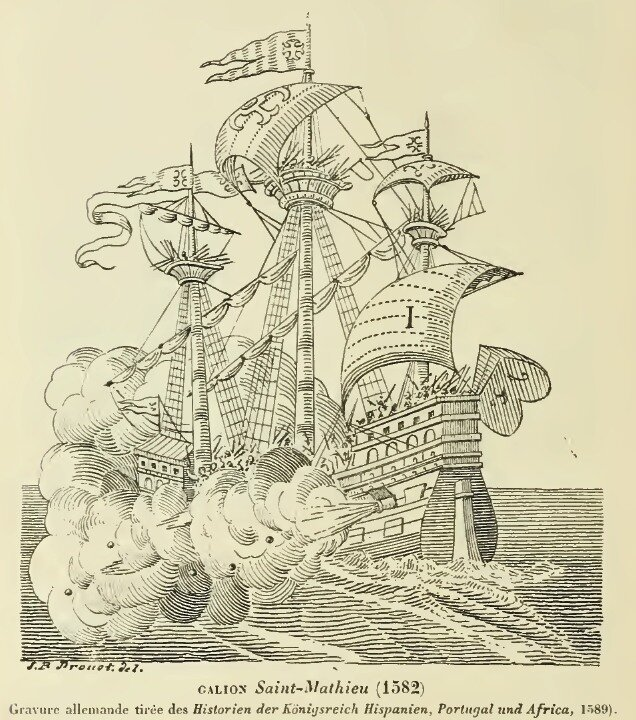
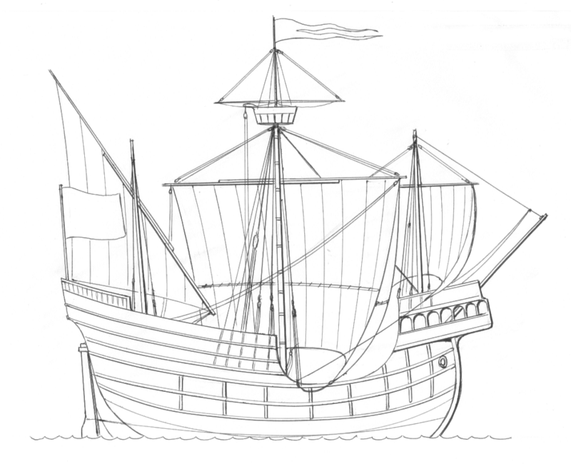

Венецианские галеоны
…
Они гребут и грабят галеоны,
Навязывая рукопашный бой.
……
Их крыши - всех воображений выше,
Они приплыли из таких баллад,
Где бегают компьютерные мыши
И мышьяком отравлен шоколад.
Идя на дно, они уходят в бусы
На чёрном платье с голою спиной...
У них ничуть не изменились вкусы
С тех пор, как флот был парусно-гребной.
(Юнна Мориц)

Галеон Saint-Mathieu (1582)
Вообще-то в русском языке принято было писать не «галеон», а «галион». Если в XVII в. встречались оба написания:
«По берегу стоятъ галионы и корабли и малые кораблики, и струги, и всякия мелкия суда» (Проскинитарий Арсения Суханова, вып.12,1653)
«Дважды чрез лѣто тѣхъ галеоновъ караванъ… из Царяграда во Александрию ходитъ.» (Похождение в Святую землю князя Радивила Сиротки, 165, 1628 г.)
(Обе цитаты взяты из Словаря русского языка XI-XVII вв., вып. 4, Наука, 1977)
то в XVIII веке мы уже читаем:
«Галионы прежде не отойдут, дондеже Гибралтар взят будет» (Ведомости времени Петра Великого (1703-1719), вып.1, М.1903),
или
«Привозят ее <корицу> на галионах из Филиппинских островов в Акапулко» (Кораблекрушение на Индийском море и возвращение из Индии в Европу .. капитана д’Кеарни; описанные им графу д’Эстену, СПб., 1790)
Это написание сохранилось и в наши дни. Орфографический словарь Порецкой дает одну норму написания: галион. Эта же норма соблюдается и в Военно-морском словаре (М., Воениздат, 1990):
Галион - (ист., от исп. galeon), парусное судно 15—17 вв., предшественник парусного линейного корабля. Имело фок- и грот-мачты с прямыми парусами и бизань с косыми. Водоизмещение ок. 1550 т. галионы использовались в качестве военных кораблей и торговых судов. Военные галионы имели до 100 орудий и до 500 солдат на борту.
Во многих других словарях и энциклопедиях термин галион относится в основном к испанским кораблям, имевшим назначение перевозить золото и другие драгоценные товары из колоний , в основном американских, в Европу. Большую известность получили также испанские галионы, входившие в состав Непобедимой армады (1588 год). Несмотря на «испанский» след, термин галион пришел к нам скорее всего из французского (galion) или голландского (Galioen, Galjoen), так как на испанском он пишется Galeon.
Но нас сейчас интересует не «рабочая лошадка» испанской короны. Мы говорим о венецианских галеонах, входивших в состав объединенного флота Священной лиги во время сражения при Превезе 1538 года. Чтобы не путать их с галионами испанскими, будем использовать написание галеон.
Жан Симонета в своей « Histoire de François Sforza», пишет, что корабли типа Galeone использовались в 1447 году на реке По. Комментатор и продолжатель словаря Дюканжа Карпентье считает, что галеон – это развитие типа небольших речных галер, которые под названием Galiones упоминались еще в произведениях XII века. Это были гребные корабли с малой осадкой, позволявшей использовать их на речном мелководье. Однако А. Жаль полагает, что Карпентье неправ и в данном случае речь идет о галиотах, малых галерах, а не о галеонах. Galeone использовались в основном в военных целях, поэтому эти корабли имели развитые кормовые и носовые надстройки. Важное замечание у Симонеты, что галеоне были шире и выше (latiores et sublimiores) галер. Это позволяло им более эффективно использовать артиллерию. Именно от этих кораблей, очевидно, получили свое название более поздние парусные венецианские galeone.
Это предыстория. А история такова.

Чертеж венецианского галеона
Первый галеон для плавания в открытом море в Венеции был построен между 1526 и 1530 годом. Построил его знаменитый венецианский кораблестроитель Маттео Брессан (Matteo Bressan), который свое ремесло во многом усвоил от другого Брессана – Леонардо (в некоторых источниках считают его старшим братом Маттео). Леонардо Брессан был известным строителем как раз речных судов, в том числе знаменитых венецианских барок – barze. Строил он и речные galeone. Видимо, как название, так и основные конструктивные решения венецианских галеонов – плод творчества Леонардо Брессана.
Первый венецианский галеон – Galeone Di Venezia – был известен также по некоторым документам под именем «Candia». Экипаж его состоял из 120 матросов и 160 солдат. Это был трехмачтовый парусный военный корабль водоизмещением ок. 650 тонн. На фок- и грот мачтах были прямые паруса, на бизани – латинский. Длина галеона была 33м, ширина – 8,5 м, осадка – 4 м. Новым в его конструкции являлось наличие двух батарейных палуб, причем нижняя находилась под сплошной верхней палубной и орудия вели огонь через порты в борту. На каждой палубе было по 16 орудий, на нижней – 9-ти фунтовые кулеврины, на верхней калибр орудий был в два раза меньше.
О бое венецианского галеона с турецкими галерами мы расскажем в следующий раз.